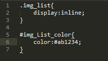

Technical Blog On CSS
Created By Sagar Rathi
Date: 10/18/2014
IDs are unique and beautiful snowflakes. Classes are not. — Rob Glazebrook
In CSS we use attributes classes and ID’s with HTML tag for adding specific modification from in our stylesheets. CSS obviously needs these so that we may selectors and do our styling for HTML tag to represent web page.
Classes are useful to apply similar declarations to a variety of elements. In design, you often want thematic style to be applied consistently. For example, you may wish for all external links to be red, while internal links are blue. Using the class attribute in this case makes sense. IDs are useful to uniquely identify a particular element. On the face of it, this may seem to be a narrow use, but if you consider that a Contextual Selector [see below] can be used to apply declarations to elements which are contained by a particularly ID’ed element, the usefulness is greater. For example, you may wish to have all menu links be green, while content links are red. Placing the menu inside an element which is ID’d as “menu” or “content” respectively allows you to make contextual styling based on the section of the page
Maybe a good analogy here is bar codes and serial numbers. Take an iPod in a store. On the packaging will be a bar code. This tells the store what the product is, so when it is scanned, the system knows exactly what the product is and what it costs. It might even be able to know what color it is or where it was kept in the store. All iPod of this same type have the exact same bar code on them.
The iPod will also have a serial number on it which is absolutely unique to any other iPod (or any other device) in the world. The serial number doesn’t know the price. It could, but for the store this wouldn’t be a very efficient way to store and use that data. Much easier to use the barcode, so that for example, if the price changed, you could just change the price for that bar code and not every individual serial number in your system.
This is much like ID’s and Classes. Information that is reuseable should be kept in a class and information that is totally unique should be kept in an ID.
In the stylesheet, classes and IDs can either stand alone or go with an HTML element

The Difference between Classes and IDs
- An ID can only be used once per HTML page, where a class can be used over and over again.
- An ID is identified by a # and class by a .,
- The browser goes directly to the element ID’d as “comments”. eg http://www.example.com#comments
- One thing you can do with a class that you can’t do with an ID is to give specific elements with that class particular styling, while not putting that styling on other instances of that class.